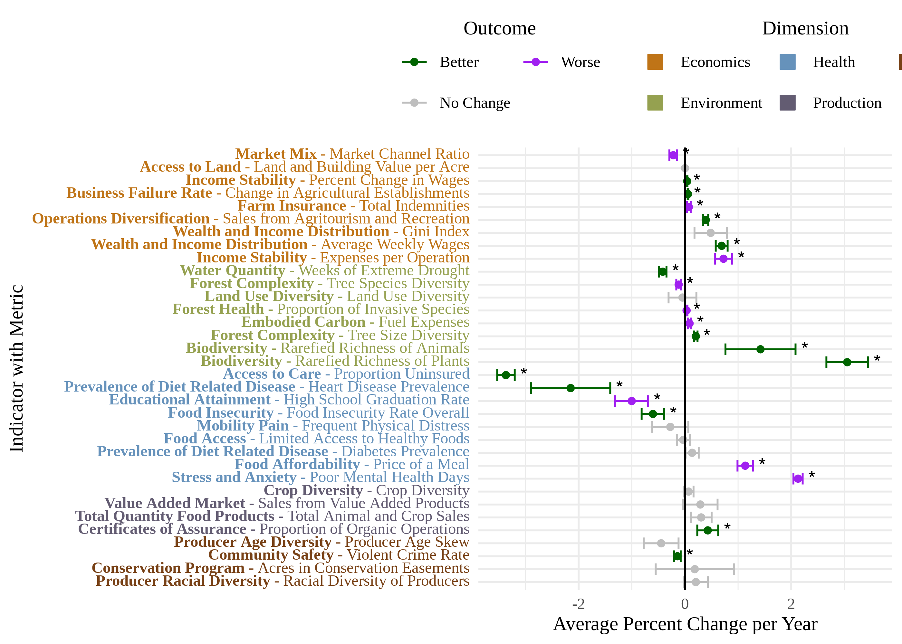

This page explores time series data at the state and county level, then runs some regressions to see whether metrics are improving or declining over time at the county level. We first run weighted OLS models with robust SEs in Section 2. Then in Section 3, we use spatial error models weighted by both geography and weighting variables.
1 Time Series
Plot time series of each metric that has at least two data points. These are unweighted values. LOESS curves are shown in blue, while individual county/state data are shown in black
1.1 County Data
First, we prepare a vector names of our time series variables for counties:
Code
# Prepare vector of county variables that are time seriesstr(SMdocs::dp_metrics_county_adj)vars <-unique(SMdocs::dp_metrics_county_adj$variable_name)series_vars <-map(vars, ~ { count <- SMdocs::dp_metrics_county_adj %>%filter(variable_name == .x) %>%pull(year) %>%unique() %>%length()if (count >1) {return(.x) } else {return(NULL) }}) %>%keep(~!is.null(.x)) %>%unlist()dir.create('5_trends/output/trend_plots', recursive =TRUE, showWarnings =FALSE)saveRDS(series_vars, '5_trends/output/series_vars.rds')
Now we plot each graph individually and arrange them together:
First create a weights crosswalk that links variable_names to weighting variables.
Code
weights_crosswalk <-data.frame(metric =c('GDP','GDP from agriculture','Total number of producers','Total number of operations','Population (annual)','Population (5 year)','Population (5 year, smooth)','Acres of land','Acres of water','Area under agriculture (CDL)','Number employed in agriculture','Acres operated','Acres operated, smooth','Acres of cropland ag land','Acres of woodland ag land','Acres of pasture ag land','Total farm income','Total sales from commodities' ),variable_name =c('gdp','gdpFromAg','nProducers','nOperations','populationAnnual','population5Year','population5YearSmooth','landAcres','waterAcres','cdlAgAcres','annualAvgEmplvlNAICS11','acresOperated','acresOperatedSmooth','agLandCropAcres','agLandWoodAcres','agLandPastureAcres','totalFarmIncome','totalSalesCommodities' ))# Link weight vars to the appropriate variablesweights_crosswalk <- SMdocs::dp_meta %>%select(variable_name, weighting) %>%filter(variable_name %in% SMdocs::dp_metrics_county_adj_normed$variable_name) %>%left_join(weights_crosswalk, by =join_by(weighting == metric)) %>%setNames(c('variable_name', 'weight_metric', 'weight_variable')) %>%select(-weight_metric) %>%na.omit()head(weights_crosswalk)
where \(y_i\) is the normalized value of the metric across counties, \(x_{1i}\) is the year, \(x_{2i}\) is the state each county is part of, and \(\epsilon\) is the error term.
Code
# Get a crosswalk to add state as a fixed effectstate_link <- SMdata::fips_key %>%filter(str_length(fips) ==2, fips !='00') %>%select(fips, state_code)res <-map(SMdocs::series_vars, ~ {tryCatch( { df <- SMdocs::dp_metrics_county_adj_normed %>%filter(variable_name == .x) %>%mutate(value =as.numeric(value),year =as.numeric(year),state_fips =str_sub(fips, end =2) ) %>%left_join(state_link, by =join_by(state_fips == fips))# Add weighting variable weight_var <- weights_crosswalk$weight_variable[weights_crosswalk$variable_name == .x] weight_df <- SMdocs::dp_weightsif (!is.na(weight_var) &&length(weight_var) >0) { weight_df <- weight_df %>%filter(variable_name == weight_var) } weight_df <- weight_df %>%mutate(value =as.numeric(value), year =as.numeric(year) ) %>%rename(weight_value = value, weight_name = variable_name,weight_year = year )# Depending on whether weight has a year, do appropriate joinif (all(is.na(weight_df$weight_year))) { df <- df %>%inner_join(weight_df, by =join_by(fips)) } else { df <- df %>%inner_join(weight_df, by =join_by(fips, year == weight_year)) }# Reduce to county fips only. Remove dupes df <- df %>%filter(str_length(fips) ==5) %>%distinct()# Weighted OLS model <-lm( normed_value ~ year + state_code, data = df,weights = weight_value )return(model) },error =function(e) {message(paste('Error with var', .x)) } )}) %>%setNames(c(SMdocs::series_vars)) %>%discard(\(x) is.null(x))str(res)# Robust SEslmtest::coeftest(res[[1]])# Save immediate output# saveRDS(res, '5_trends/output/weighted_ols_outs.rds')# saveRDS(res, 'test.rds')
We are saving these outputs to a file so we don’t have to rerun it every time we want them.
2.2 Wrangling
Now that we have regression outputs, let’s put them in a table to see which ones change significantly over time.
Code
# Put together one table of results from all models, add stars# res <- readRDS('5_trends/output/weighted_ols_outs.rds')str(res)# Check for NA outputsres[[1]]$coefficients[['year']]coefs <-map(res, ~ .x$coefficients[['year']])names(coefs[is.na(coefs)])# Mobility disability is NA because there is only 1 year after we join with # weighting variable. So we need to just throw it out if we can't get smoothed# population for 2024.res <- res %>%discard(~is.na(.x$coefficients[[2]]))# Make a table of regression outputs, including robust standard errorsres_df <-imap(res, ~ { vcov =vcovHC(.x, type ='HC0') df <-coeftest(.x, vcov = vcov) %>%tidy() %>%filter(term =='year') %>%mutate(term = .y) conf_ints <-coefci(.x)['year', ] df$ci_low <- conf_ints[1] df$ci_high <- conf_ints[2] df}) %>%bind_rows() %>%mutate(sig =ifelse(p.value <0.05, '*', ''))res_df# How many time series metrics total(n_metrics <-nrow(res_df))# How many change over time significantly( n_change <- res_df %>%filter(sig =='*') %>%nrow())# Percentage significant(perc_sig <-mean(res_df$sig =='*', na.rm =TRUE) *100)
Note that we only have 2 years for the mobility disability metric - 2023 and 2024. But we don’t have a smoothed 5-year population for 2024, only 2023. So we can only use a single year, which means there is no variation in year. So we are dropping this from the analysis.
Out of 38 metrics with > 1 time point, we have 24 metrics that change significantly over time (63.16%).
Still have to make sense of the directional values of our metrics. In this next chunk, we assign normative directions to each metric so we can tell whether they are getting better or worse over time based on whether high values or low values are desirable.
Code
# Of those that are significant, what are trends# leaving in all of them, even if not significant thoughraw_outputs <- res_df %>%mutate(trend =case_when( estimate >0& sig =='*'~'increasing', sig ==''~NA_character_,.default ='decreasing' ))# Bring in directional values. Keep only the ones without question marks, # clearly higher or lowerstr(SMdocs::dp_meta)directions <- SMdocs::dp_meta %>%filter(str_detect(desirable, 'higher|lower'), !is.na(variable_name)) %>%mutate(desirable =str_remove_all(desirable, '\\?')) %>%select(variable_name, desirable)reverse <- directions %>%filter(desirable =='lower') %>%pull(variable_name)# Reduce to only vars that have a direction.# Here we lose a few metricsmodel_outputs <- raw_outputs %>%filter(term %in% directions$variable_name) %>%mutate(reverse =ifelse(term %in% reverse, TRUE, FALSE),outcome =case_when( reverse ==FALSE& trend =='increasing'~'better', reverse ==FALSE& trend =='decreasing'~'worse', reverse ==TRUE& trend =='increasing'~'worse', reverse ==TRUE& trend =='decreasing'~'better',.default =NA ),across(where(is.numeric), ~format(round(.x, 3), nsmall =3)) )model_outputs# See what we lost(lost <-setdiff(raw_outputs$term, model_outputs$term))(n_lost <-length(lost))(print_lost <- lost %>%paste0(collapse =', '))# proportion getting better or worse(tab <-table(model_outputs$outcome))(percs <-round(prop.table(tab), 3) *100)
59.1% are getting better and 40.9% are getting worse. We drop 4 metrics here that don’t have proper directions (vacancyRate, populationChangePerc, annualPrecipCMSqKm, ftmProdRatio).
2.3 Table
Now we can check out the outputs table for each regression. In each model,
Trend is just whether it is going up or down, outcome is whether that is good or bad.
Figure below shows 95% confidence intervals for the coefficients of each metric, including state as a covariate.
Code
# Combined label for indicator and metric# See repository for function definitions!processed_lm_data <-prepare_figure_data(framed_outputs)lm_figure <-pct_change_graph(figure_data = processed_lm_data$figure_data,dp_text_palette = dp_text_palette,label_dimension_lookup = processed_lm_data$label_dimension_lookup)ggsave('5_trends/output/fig_lm.png',plot = lm_figure,width =8,height =5,units ='in',bg ='white')lm_figure

3 Spatial Regressions
3.1 Models
Here we run the same process but using spatial error models with the spatialreg package. We are now working with:
\[
\Large y = X\beta + u, u = \lambda Wu + \epsilon,
\]
where \(y\) are normalized metric values, \(X\) is an \(n * k\) matrix, \(\beta\) is a vector of predictors, \(u\) is the spatial autocorrelation error term, \(\lambda\) is the spatial error parameter, \(W\) is the county weights matrix, and \(\epsilon\) is the error term.
We run this portion of the code in parallel because it has a pretty long run time. Again, results are saved so it doesn’t need to be run again unless something changes.
Code
str(SMdocs::dp_metrics_county_adj)state_link <- SMdata::fips_key %>%filter(str_length(fips) ==2, fips !='00') %>%select(fips, state_code)dat <- SMdocs::dp_metrics_county_adj %>%pivot_wider(id_cols = fips:year,names_from = variable_name,values_from = value ) %>%filter(str_detect(fips, '^09', negate =TRUE)) %>%mutate(link =str_sub(fips, end =2)) %>%left_join(state_link, by =join_by(link == fips)) %>%select(-link) %>%mutate(across(!c(fips, state_code), as.numeric))str(dat)# Get vector of vars(vars <-names(dat)[!names(dat) %in%c('fips', 'year', 'state_code')])tic()plan(multisession, workers =availableCores(omit =2))sar_outs <-future_map(vars, \(var) {cat('\n\nStarting', var)tryCatch({# Reduce to relevant variable, remove NAs df <- dat %>%select(fips, year, !!sym(var), state_code) %>%drop_na(!!sym(var)) %>%mutate(normed =min_max(!!sym(var)))# Regular weights weight_var <- weights_crosswalk$weight_variable[weights_crosswalk$variable_name == var]if (!is.na(weight_var) &&length(weight_var) >0) { weight_df <- SMdocs::dp_weights %>%mutate(value =as.numeric(value), year =as.numeric(year) ) %>%rename(weight_value = value, weight_name = variable_name,weight_year = year ) %>%filter(weight_name == weight_var, str_length(fips) ==5)# Join weights back to df# df <- df %>% # inner_join(weight_df, by = join_by(fips, year == weight_year))if (all(is.na(weight_df$weight_year))) { df <- df %>%inner_join(weight_df, by =join_by(fips)) } else { df <- df %>%inner_join(weight_df, by =join_by(fips, year == weight_year)) }cat('\nJoined to weights:', weight_var) } else {cat('\nNo weighting variable') }# List weights lw <- SMdata::neast_counties_2024 %>%right_join(df) %>%select(fips, year, normed) %>%poly2nb() %>%nb2listw(zero.policy =TRUE) cat('\nCreated lw')# Assign weights arg if variable is weighted. Otherwise NULLif (!is.na(weight_var) &&length(weight_var) >0) { weights_arg <- df[['weight_value']] } else { weights_arg <-NULL }# Run error sar model with appropriate (or no) weighting model <-errorsarlm( normed ~as.numeric(year) + state_code,data = df,listw = lw,weights = weights_arg ) cat('\nRan model')return(model) },error =function(e) {return(paste0('Error with ', var, ': ', e)) } )}, .progress =FALSE, .options =furrr_options(seed =TRUE)) %>%setNames(c(vars))plan(sequential)toc()# 6 to 12 minutes or so# out# out[[1]]str(sar_outs)str(sar_outs[[1]])map(sar_outs, class)# saveRDS(out, '5_trends/output/errorsarlm_outs.rds')
3.1.1 Reactable Table
First we wrangle our outputs to get the relevant results in a nicely formatted table:
Code
# sar_outs <- readRDS('5_trends/output/errorsarlm_outs.rds')start <-length(sar_outs)sar_outs <- sar_outs[names(sar_outs) !='state_code'] %>%keep(~class(.x) =='Sarlm')end <-length(sar_outs)(lost <- start - end)# 42 down to 38 heresar_df <-imap(sar_outs, ~ {tryCatch( { df <-tidy(.x) est <- df[2, 'estimate'] %>% as.numeric se <- df[2, 'std.error'] %>% as.numeric alpha <-0.05 z <-qnorm(1- alpha/2) confints <-c(est - z * se, est + z * se)# confints <- confint(.x)[3, ] out <- df %>%filter(str_detect(term, 'year')) %>%mutate(variable_name = .y,conf_low = confints[1],conf_high = confints[2] ) %>%select(-term) %>%mutate(sig =case_when( p.value <0.001~'***', p.value >0.001& p.value <0.01~'**', p.value >0.01& p.value <0.05~'*', p.value >0.05~' ',.default =NA ) )return(out) },error =function(e) {message('Error')print(e) } )}) %>%keep(is.data.frame) %>%bind_rows()str(sar_df)# sar_df# 38 down to 36.(lost <-setdiff(names(sar_outs), sar_df$variable_name))check <- sar_outs[names(sar_outs) %in% lost]# Not defined because of singularities. Single time points. # At least while including the weighting variables.sar_raw_outputs <- sar_df %>%mutate(trend =case_when( estimate >0&str_detect(sig, '\\*') ~'increasing', estimate <0&str_detect(sig, '\\*') ~'decreasing',str_detect(sig, '\\*', negate =TRUE) ~'no change',.default =NA_character_ ))str(sar_raw_outputs)# Bring in directional values. Keep only the ones without question marks, # clearly higher or lowerstr(SMdocs::dp_meta)directions <- SMdocs::dp_meta %>%filter(str_detect(desirable, 'higher|lower'), !is.na(variable_name)) %>%mutate(desirable =str_remove_all(desirable, '\\?')) %>%select(variable_name, desirable)reverse <- directions %>%filter(desirable =='lower') %>%pull(variable_name)# Reduce to only vars that have a direction.# Here we lose a few metricssar_model_outputs <- sar_raw_outputs %>%filter(variable_name %in% directions$variable_name) %>%mutate(reverse =ifelse(variable_name %in% reverse, TRUE, FALSE),outcome =case_when( reverse ==FALSE& trend =='increasing'~'better', reverse ==FALSE& trend =='decreasing'~'worse', reverse ==TRUE& trend =='increasing'~'worse', reverse ==TRUE& trend =='decreasing'~'better', trend =='no change'~'no change',.default =NA ),across(where(is.numeric), ~format(round(.x, 3), nsmall =3)) )sar_model_outputs(n_metrics <-dim(sar_model_outputs)[1])# See what we lost(lost <-setdiff(sar_raw_outputs$variable_name, sar_model_outputs$variable_name))(n_lost <-length(lost))(print_lost <- lost %>%paste0(collapse =', '))# proportion getting better or worse(tab <-table(sar_model_outputs$outcome))(percs <-round(prop.table(tab), 3) *100)
We have 31 metrics modeled. 48.4% are getting better, 29% are getting worse, and 29% are stable. We drop 4 metrics here that don’t have proper directions (vacancyRate, populationChangePerc, annualPrecipCMSqKm, ftmProdRatio).
Now we present the table, including normative outcomes:
str(sar_framed_outputs)# Reduce to specific columnslatex_df <- sar_framed_outputs %>%select(metric, estimate:p.value, sig, outcome) %>%mutate(# p.value = ifelse(sig == '*', paste0(p.value, '*'), p.value),p.value =case_when(str_detect(sig, '\\*') ~paste0(p.value, sig),.default = p.value ),outcome =case_when( outcome =='no change'~'\\textemdash',.default =str_to_title(outcome) ) ) %>%select(-sig) %>%setNames(c('Metric','$\\beta$','SE','$z$-value','p-value','Outcome' ))str(latex_df)# Save to latexlatex_df %>%kbl(format ='latex',caption ='Spatial error models of year and state on metric',label ='tab_errorsarlm',booktabs =TRUE,escape =FALSE ) %>%kable_styling(font_size =9 ) %>%footnote(general_title ="",general ='\\\\textit{Note: }The table shows coefficients of the effect of year on normalized, inflation-adjusted metrics with state as a covariate. Metrics are weighted by variables shown in Table \\\\ref{tab:tab_metrics_body}. Significant p-values indicated change over time, and the direction of the outcome was determined based on desirable directions of change for each metric. ***: p < 0.001, **: p < 0.01, *: p < 0.05.',threeparttable =TRUE,escape =FALSE ) %>%save_kable(file ='5_trends/output/tab_errorsarlm.tex' )
3.1.3 Figure
Finally, the figure below shows coefficient estimates and confidence intervals for the errorsar models. Green points represent metrics that are trending in a “good” direction, while purple represents trends in a “bad” direction.
Code
# Using functions at top of script to process outputs and make grapherrorsar_figure_data <-prepare_figure_data(model_output_df = sar_framed_outputs)errorsar_figure <-pct_change_graph(figure_data = errorsar_figure_data$figure_data,dp_text_palette = dp_text_palette,label_dimension_lookup = errorsar_figure_data$label_dimension_lookup)ggsave('5_trends/output/fig_errorsarlm.png',plot = errorsar_figure,width =8.5,height =6,units ='in',bg ='white')errorsar_figure